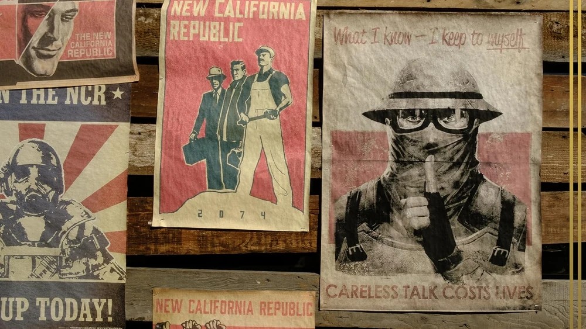
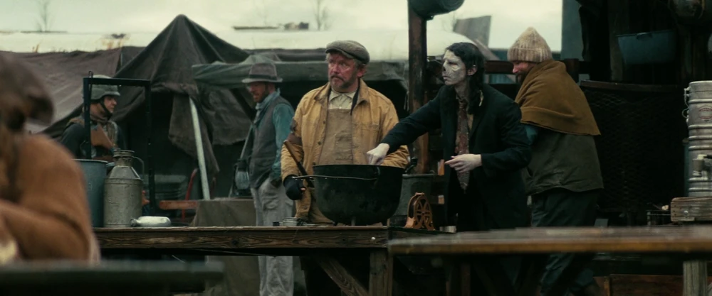
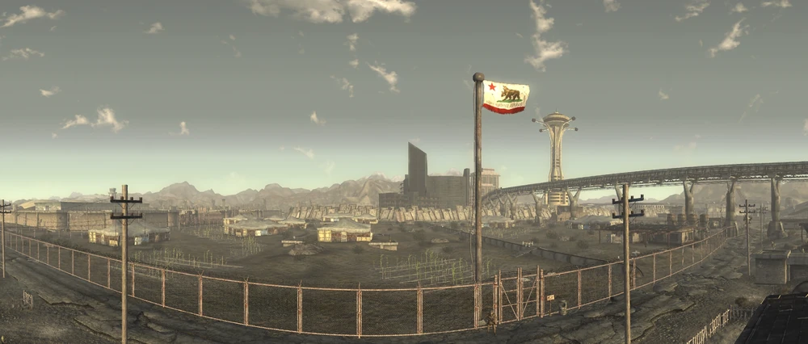
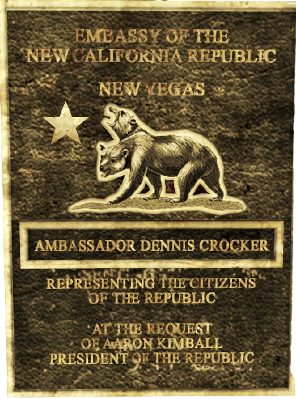

New California Republic
諸君はシエラネバダからそびえ立つセコイアであり、反抗的で不屈だ」
―― アーロン・キンバル大統領
新カリフォルニア共和国
は、2189年に同名の領土である新カリフォルニアに設立された戦後の連邦共和国です。
その全盛期には、かつてのアメリカ合衆国カリフォルニア州の南半分に位置する隣接する5つの州で構成されていました。
さらに、カリフォルニア北部、オレゴン、ネバダ、アリゾナ、そしてメキシコ北部にまで領土を保有していました。
公式に、新カリフォルニア共和国 は民主主義、個人の自由、そして法の支配を象徴しています。
しかし、これらの価値観の維持は国内および国外の両方で一貫性を欠いていました。
多くの NCR
市民が共和国の拡大から大きな恩恵を受けた一方で、共和国は資源の獲得や辺境地域の「文明化」あるいは鎮圧を目的とした拡張主義や帝国主義にも従事してきました。

モハビ併合への多大な努力が 新カリフォルニア共和国
の死を招くだろうという理論も多くありましたが、その没落は砂漠から訪れたのではありませんでした。
第2次フーバーダムの戦いの後、最初の首都であったシェイディ・サンズ
は、2283年に核爆発によって破壊されました。
2296年現在、シェイディ・サンズ を失ったものの、NCR は完全に消滅したわけではありません。
分裂した NCR の残存メンバーは、依然としてウェイストランド中に散らばっています。
背景
新カリフォルニア共和国 の歴史は、2097年頃に避難所から現れた Vault 15 の生存者たちがシェイディ・サンズの町を建設したことに遡ります。
Vaultの居住者 の助けを借りてレイダー部族のカーンズが壊滅した後、アラデシュとその娘タンディは、共同体を繁栄へと導きました。
2186年にシェイディ・サンズで 新カリフォルニア共和国
が結成され、憲法を起草するための試行評議会政府が設立されました。
3年後の2189年、共和国本隊は廃墟の中の主要な定住地を中心に組織された5つの州の連邦として投票により成立しました。
その5つの州とは、シェイディ、ロサンゼルス、マクソン、ハブ、およびデイグロウです。

建国から1世紀以内に、NCR
はポスト・アポカリプスにおける成功と良好な倫理のモデルケースとなりました。
着実な拡大と発展により、広範な政治的参政権、法の支配の確立とその執行、内外の脅威からの安全確保、そして単なる生存を超えた生活水準が、70万人を超える巨大な市民人口にとって現実のものとなりました。
しかし、タンディ大統領の死後、NCR
は急速な経済成長と劇的な政治的変化を経験し、本来の壮大な理想を危うくする過渡期に入りました。
歴代の大統領の下で拡大政策が始まり、その変化の最大の例が道徳的に腐敗した帝国主義的な
モハビ・キャンペーンでした。
さらに、グレート・カーンズとの衝突中に NCR がビター・スプリングス の定住地で引き起こした虐殺は、男性、女性、子供が区別なく殺害され、共和国とその軍隊に暗い影を落としました。
しかし、NCR を危機に陥れたのは第2次フーバーダムの戦いではなく、2283年のシェイディ・サンズの予期せぬ前例のない破壊でした。
首都の喪失、および NCR 元老院、NCR 評議会、OSI
といった主要な政府機関の消滅は、NCR をフリーフォール（自由落下）の状態へと突き落としました。
社会
抽象的に言えば、NCR は進歩を象徴しています。
組織化されていないウェイストランダーや部族民が自給自足の農業に頼り、日々の生活で困難に直面している一方で、NCR
の市民はウェイストランドの他の人々には手に入らない贅沢品、すなわち大規模で安定した経済、ヘルスケア、法律、組織化された安定した政府、そしてポスト・アポカリプスの世界で最大として知られる軍隊へのアクセスを得ています。
共和国の国旗はカリフォルニア州旗に直接インスピレーションを得ており、草地に立つカリフォルニアグリズリーベアが描かれています。
初期の旗はデザインが大きく異なっていましたが、2241年に見られた最初の旗には、カリフォルニア州のシルエットの上に2つの頭を持つグリズリーベアが描かれ、背景に「NCR」の文字、左上に赤い星、下部に赤いバーがありました。

経済と通貨
NCR
の市場経済は、巨大なバラモンの群れと、耕作可能な状態に復元された広大な土地という2つの資源に基づいています。
その結果、牧場主や農場主が大きな影響力を持っていました。
アーロン・キンバル大統領の時代には、富裕な農場主や牧場主（一般にバラモン男爵として知られる）が莫大な影響力を及ぼすようになりました。
NCR は独自の貨幣を導入し、当初は金から鋳造された硬貨に依存していました。
しかし、B.O.S.との紛争中、辺境にある NCR の金準備が襲撃されたため、NCR
は新しい金貨の鋳造を停止せざるを得なくなりました。
インフレーションを封じ込めるため、政府は金本位制を廃止し、正貨で支払われない不換紙幣を確立しました。
2281年時点で、NCR
ドルは水に裏打ちされたキャップの約40%の価値しかありません。

軍事
大統領と議会に従属する NCR の軍隊は、その最も特徴的な要素の一つです。
中核となる NCR
陸軍は、数千人の現役兵を擁していました。
彼らは師団と大隊に組織され、標準化された武器とアーマーを装備していました。
また、エリート部隊として NCR レンジャーが存在します。
領土
- シェイディ: シェイディ・サンズ、Vault 15、ジャンクタウンなど。
- ロサンゼルス: アディタムやボーンヤード周辺。
- ハブ: ハブとその周辺。
- マクソン: ロスト・ヒルズを含む。
- デイグロウ: エンジェルズ・ボーンヤード南部。
- ニューベガス: 併合された場合の潜在的な第6の州。
注記
- シーザーによれば、彼は子供の頃 NCR の市民であり、母親はボーンヤードの図書室で黙示録の追随者のために働いていました。
- ユリシーズは、NCR の旗の由来を知る数少ない人物の一人であり、かつてのクマは頭が一つだったと指摘しています。
新カリフォルニア共和国 は、Fallout シリーズにおける「文明再建の光と影」を最も鮮明に描き出している勢力ですね。
驚異的な復興: 小さな村から始まり、70万人以上の人口を抱える巨大国家へと成長したプロセスは、人類の底力を感じさせます。
特に教育やヘルスケアが制度化されている点は、他の勢力にはない圧倒的なアドバンテージです。
避けられない腐敗: 民主主義を掲げながらも、実態はバラモン男爵 や大企業が政治を支配し、拡張主義に走る姿は、戦前の旧世界が辿った過ちを繰り返しているようで非常に皮肉です。
喪失と継承: 2283年の首都破壊という絶望的な状況にありながら、依然としてその理想を抱き続ける人々がいる事実は、NCR が単なる国家を超えた「思想」としてウェイストランドに根付いていることを示しています。
This article was created by translating and editing New California Republic from Nukapedia: The Fallout Wiki.
Licensed under the Creative Commons Attribution-Share Alike License (CC BY-SA 3.0).
> COMMENTS